Passi da eseguire:
Se si usa un raspberry pi prima di iniziare leggere qua.
Per prima cosa aprire il terminale e iniziamo a digitare i seguenti comandi.
Diventare amministratore:
Sudo -i
Poi:
apt-get update
apt-get install apache2 apache2-utils libexpat1 apache2-suexec
Adesso bisogna impostare il nome del server appena creato, aggiungendo alla fine del file apache2.conf la riga:
ServerName NomeDelServer
nano /etc/apache2/apache2.conf
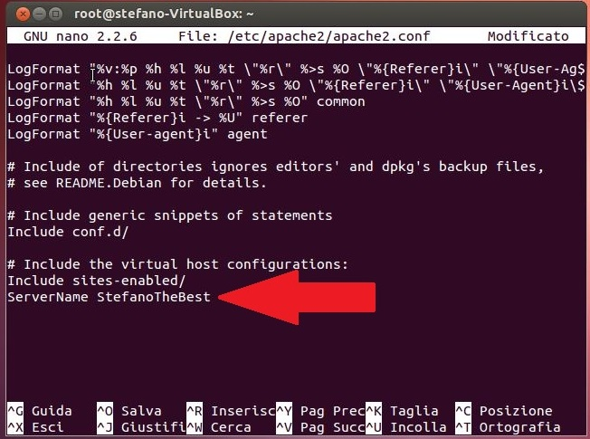
Bisogna riavviare Apache:
service apache2 force-reload
Installare php5 richiede un solo comando:
apt-get install php5 libapache2-mod-php5
apt-get install mysql-server mysql-client
Durante l’installazione si deve impostare la password per accedere al database.
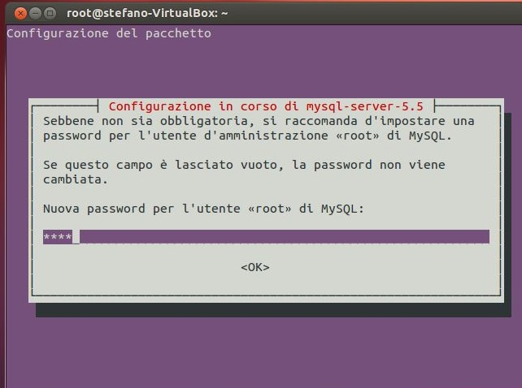 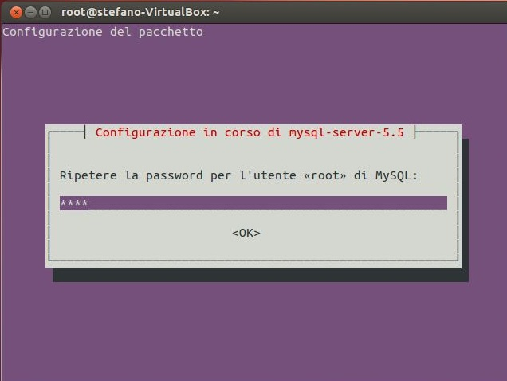
apt-get install phpmyadmin
Durante l'installazione scEgliere l'opzione apache2.
Rispondere yes alla domanda "configurare il database di phpmyadmin con dbconfig-common?".
Poi viene chiesta la password del database prima creato.
E definire la password di amministratore phpmyadmin.
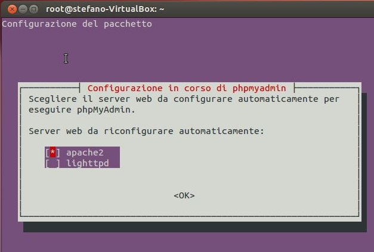 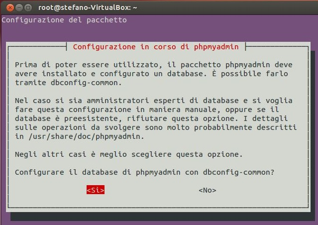 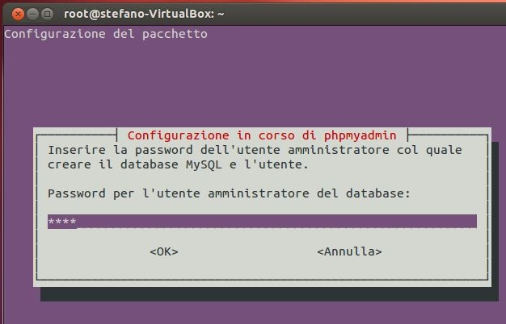 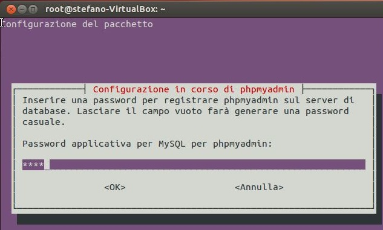 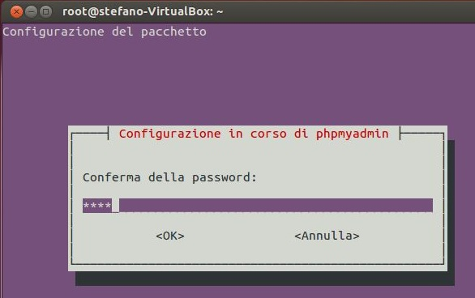
La directory del server si trova in "/var/www/".
La directory del server si trova in "/var/www/" si può creare una directory più comoda, ad esempio nella scrivania.
Usciamo dalla modalita amministratore digitando : "exit".
Creiamo la cartalla nella scrivania:
mkdir /home/NomeUtente/Scrivania/Sito
Dovrebbe essersi creata una cartella nella scrivania:
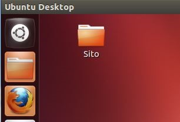
Ritornare alla modalità amministratore: "sudo -i".
Prima di modificare il file di configurazione apache lo duplichiamo:
cp /etc/apache2/sites-available/default /etc/apache2/sites-available/NomeDelSito
Aprire il file di configurazione:
gedit /etc/apache2/sites-available/ NomeDelSito
Cambiare il parametro ServerAdmin con la vostra email(operazione non necessaria).
Cambiare il parametro DocumentRoot per fare in modo che punti al nuovo percorso, ad esempio /home/NomeUtente/Scrivania/Sito/
Cambiare la direttiva Directory, sostituendo Directory /var/www/ con Directory /home/NomeUtente/Scrivania/Sito/
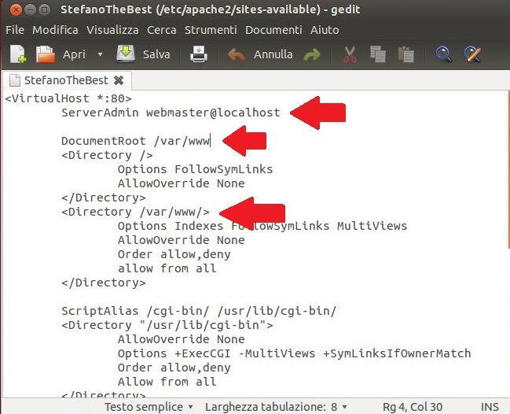 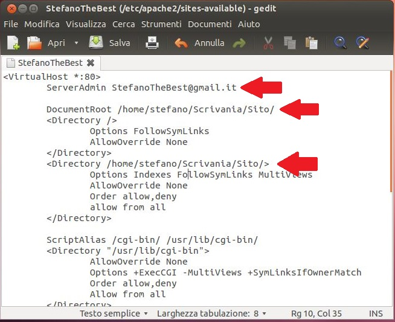
Salvare ed uscire.
Si deve attivare il sito con i parmaetri cambiati:
a2dissite default && sudo a2ensite NomeDelSito
Bisogna riavviare Apache:
service apache2 force-reload
Se si usa un raspberry pi prima di iniziare verificare lo spazio libero sulla microSD:
df -h
Il sistema operativo occupa circa 1.9GB, e vi lascia spazio libero di 100MB(2GB in totale), anche se avete una microSD più ampia.
Quindi bisogna estendere la memoria per usare tutto lo spazio della microSD, perchè 100MB non bastano per l'installazione del webserver.
Quindi:
sudo raspi-config
Scegliere l'opzione "expand_rootfs", e alla domanda di riavviare il sistema rispondere SI.
Se si ricontrolla lo stato della memoria "df -h" si noterà che lo spazio disponibile è aumentato.
Potrebbe verificarsi il problema che il web server non apre le nostre pagine php e non fa accedere ai file.
Quindi apriamo:
gedit /etc/apache2/envvars
Modificare le linee:
export APACHE_RUN_USER=www-data export APACHE_RUN_GROUP=www-data
con
export APACHE_RUN_USER=NomeUtente export APACHE_RUN_GROUP=NomeUtente
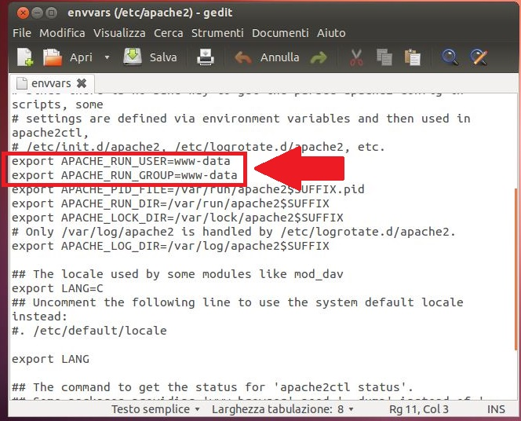 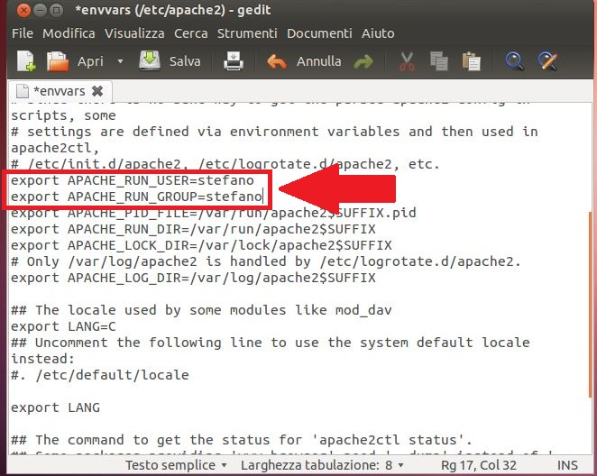
Salvare ed uscire.
Poi rimuovere un file:
sudo rm -r /var/lock/apache2